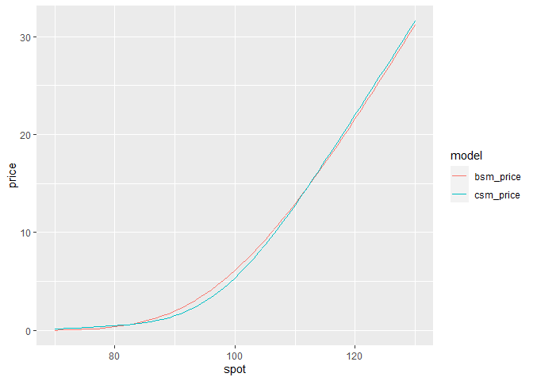
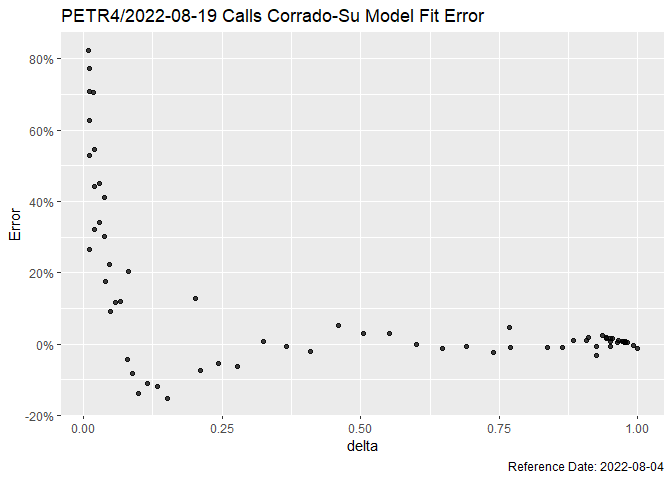

Option Volatility and Pricing Models.
Installation
You can install the development version of oplib like so:
if (!require(devtools)) install.packages("devtools")
devtools::install_github("wilsonfreitas/oplib")Examples
Pricing Equity Options with Black-Scholes-Merton Model
Pricing options with Black-Scholes-Merton Model (BSM Model).
library(oplib)
bsmprice(
type = "put", spot = 20, strike = 30, time = 1:4 / 2,
rate = 0.15, yield = 0, sigma = 0.25
)
#> [1] 7.882056 6.272936 5.098353 4.203993
bsmprice(
type = c("call", "put"), spot = c(50, 49, 48, 47),
strike = 45, time = 0.25, rate = 0.13, yield = 0.01, sigma = 0.2
)
#> [1] 6.5031266 0.2854164 4.7405597 0.6079959
bsmprice(
type = "call", spot = 50, strike = 45, time = 0.25, rate = 0.13, yield = 0.01,
sigma = seq(0.1, 0.5, 0.1)
)
#> [1] 6.316558 6.503127 7.012037 7.695351 8.464750Works nicely with {tidyverse}.
library(tidyverse)
tibble(
type = "call",
spot = 100,
strike = seq(90, 110, 5),
time = 0.5,
rate = 0.02,
yield = 0,
sigma = 0.2
) |> mutate(
price = bsmprice(type, spot, strike, time, rate, yield, sigma),
delta = bsmdelta(type, spot, strike, time, rate, yield, sigma),
gamma = bsmgamma(type, spot, strike, time, rate, yield, sigma),
rho = bsmrho(type, spot, strike, time, rate, yield, sigma),
vega = bsmvega(type, spot, strike, time, rate, yield, sigma),
theta = bsmtheta(type, spot, strike, time, rate, yield, sigma),
)
#> # A tibble: 5 x 13
#> type spot strike time rate yield sigma price delta gamma rho vega theta
#> <chr> <dbl> <dbl> <dbl> <dbl> <dbl> <dbl> <dbl> <dbl> <dbl> <dbl> <dbl> <dbl>
#> 1 call 100 90 0.5 0.02 0 0.2 12.5 0.812 0.0190 34.4 19.0 -5.18
#> 2 call 100 95 0.5 0.02 0 0.2 8.95 0.693 0.0248 30.2 24.8 -6.18
#> 3 call 100 100 0.5 0.02 0 0.2 6.12 0.556 0.0279 24.8 27.9 -6.58
#> 4 call 100 105 0.5 0.02 0 0.2 3.99 0.419 0.0276 19.0 27.6 -6.29
#> 5 call 100 110 0.5 0.02 0 0.2 2.47 0.297 0.0245 13.6 24.5 -5.44Pricing Equity Options with Corrado-Su Model
Corrado-Su model introduces skewness and kurtosis to option pricing formula.
tibble(
type = "call",
spot = seq(70, 130, 1),
strike = 100,
time = 0.5,
rate = 0.02,
yield = 0,
sigma = 0.2
) |>
mutate(
bsm_price = bsmprice(type, spot, strike, time, rate, yield, sigma),
csm_price = csmprice(type, spot, strike, time, rate, yield, sigma, -0.5, 6)
) |>
tidyr::pivot_longer(
cols = ends_with("price"),
names_to = "model",
values_to = "price"
) |>
ggplot(aes(x = spot, y = price, color = model)) +
geom_line()
See that Corrado-Su modelo is cheaper than Black-Scholes for ATM options and expensive for OTM and ITM, as a consequence of the kurtosis.
Options Implied Volatility
We can get option prices with {rb3} and compute their implied volatility. Let’s start getting all PETR4 optoins.
library(rb3)
library(bizdays)
library(tidyverse)
refdate <- preceding(Sys.Date() - 3, "Brazil/B3")
ch <- cotahist_get(refdate, "daily")
yc <- yc_get(refdate)
op <- cotahist_equity_options_superset(ch, yc)
symbol_ <- "PETR4"
op1 <- op |>
filter(
symbol.underlying == symbol_
)Filter the first two available maturities.
maturities <- unique(op1$maturity_date) |> sort()
op1 <- op1 |>
filter(maturity_date %in% maturities[1:2])Compute implied volatility and delta of the options. Note that it is necessary to:
- compute business days
biz_daysto gettime_to_maturityin years - convert interest rate (
ratecolumn) to continuous rate
op_vol <- op1 |>
mutate(
biz_days = bizdays(
refdate, following(maturity_date, "Brazil/B3"), "Brazil/B3"
),
time_to_maturity = biz_days / 252,
rate = log(1 + r_252),
impvol = bsmimpvol(
close, type, close.underlying, strike, time_to_maturity, rate, 0
),
delta = bsmdelta(
type, close.underlying, strike, time_to_maturity, rate, 0, impvol
)
)Visualize with {ggplot2}
op_vol |>
filter(!is.na(impvol)) |>
ggplot(aes(x = delta, y = impvol, size = volume)) +
geom_point(alpha = 0.5) +
facet_wrap(type ~ biz_days, scales = "free_x") +
theme(legend.position = "bottom") +
labs(
x = "Delta", y = "Implied Volatility",
title = str_glue("Equity Options Volatility - {symbol_} {format(refdate)}")
)
Fit Corrado-Su Model to Options Prices
Use options prices to find the parameters of Corrado-Su model. The function csm_fit_min_price executes the fit by minimizing the difference between the given prices and prices returned by the formula.
Execute the fit only for the first maturity call options and see the result (fitted parameters) in the end.
params <- with(op_vol |> filter(type == "Call", maturity_date == maturities[1]), {
csm_fit_min_price(
par = c(0.1, 0, 3),
type, close.underlying, strike, rate, 0, time_to_maturity, close, 1,
control = list(trace = 3)
)
})
#> N = 3, M = 5 machine precision = 2.22045e-16
#> This problem is unconstrained.
#> At X0, 0 variables are exactly at the bounds
#> At iterate 0 f= 3.9264 |proj g|= 18.082
#> At iterate 10 f = 0.97023 |proj g|= 1.3768
#> At iterate 20 f = 0.88965 |proj g|= 0.028646
#>
#> iterations 25
#> function evaluations 47
#> segments explored during Cauchy searches 1
#> BFGS updates skipped 0
#> active bounds at final generalized Cauchy point 0
#> norm of the final projected gradient 1.88873e-05
#> final function value 0.889647
#>
#> F = 0.889647
#> final value 0.889647
#> converged
params
#> sigma mu3 mu4
#> 0.3075525 -0.0836883 4.4146539Compute the theoretical price with Corrado-Su model.
op_csm_call <- op_vol |>
filter(type == "Call", maturity_date == maturities[1]) |>
mutate(
theo_price = csmprice(
type, close.underlying, strike, time_to_maturity, rate, 0,
as.numeric(params[1]), as.numeric(params[2]), as.numeric(params[3])
)
)Visualize the given prices and model together in a plot.
op_csm_call |>
ggplot(aes(x = strike, y = close)) +
geom_point(alpha = 0.75) +
geom_line(aes(y = theo_price), colour = "red") +
labs(
y = "Price",
title = str_glue("{symbol_}/{format(maturities[1])} Calls Corrado-Su Model Fit"),
caption = str_glue("Reference Date: {format(refdate)}")
) +
theme(legend.position = "none")
An interesting view is the relative error.
op_csm_call |>
ggplot(aes(x = delta, y = (close - theo_price) / close), size = volume) +
geom_point(alpha = 0.75) +
labs(
y = "Error",
title = str_glue("{symbol_}/{format(maturities[1])} Calls Corrado-Su Model Fit Error"),
caption = str_glue("Reference Date: {format(refdate)}")
) +
scale_y_continuous(labels = scales::percent)
#> Warning: Removed 26 rows containing missing values (geom_point).
It is clear that OTM options have the greater error, mainly due to their small prices.